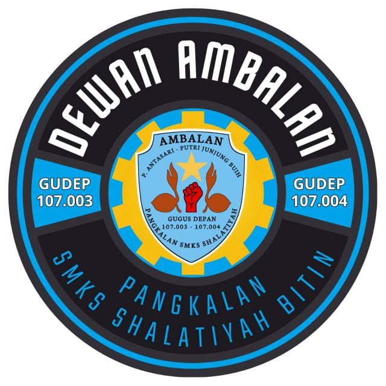

Selamat Datang di Ambalan Pramuka
SMKS Shalatiyah Bitin
Tempat Membentuk Generasi Muda yang Beriman, Disiplin, dan Tangguh
Logo Sekolah

Logo Ambalan
Ambalan Pramuka SMKS Shalatiyah Bitin merupakan wadah pembinaan karakter, kepemimpinan, dan keterampilan bagi para siswa penegak. Di bawah bimbingan Pembina yang berpengalaman, Ambalan ini terus berupaya mengembangkan kegiatan yang berlandaskan Tri Satya dan Dasa Dharma Pramuka.
Dengan semangat “Satyaku Kudarmakan, Darmaku Kubaktikan”, Ambalan Pramuka menjadi tempat lahirnya generasi muda yang siap mengabdi kepada masyarakat, bangsa, dan negara, serta menjunjung tinggi nilai-nilai kejujuran, kerja sama, dan tanggung jawab.